Introduction
Today, McCarthy’s Court exists as a quiet, unassuming cobbled dead-end lane opening off the western side of Commercial Street in Newport, nestled between Nos. 153 and 154. Truncated in the twentieth century by commercial redevelopment, it has long been an urban enigma—a surviving fragment of historic streetscape whose true origins and namesake have largely faded from local memory.
McCarthy’s Court Today
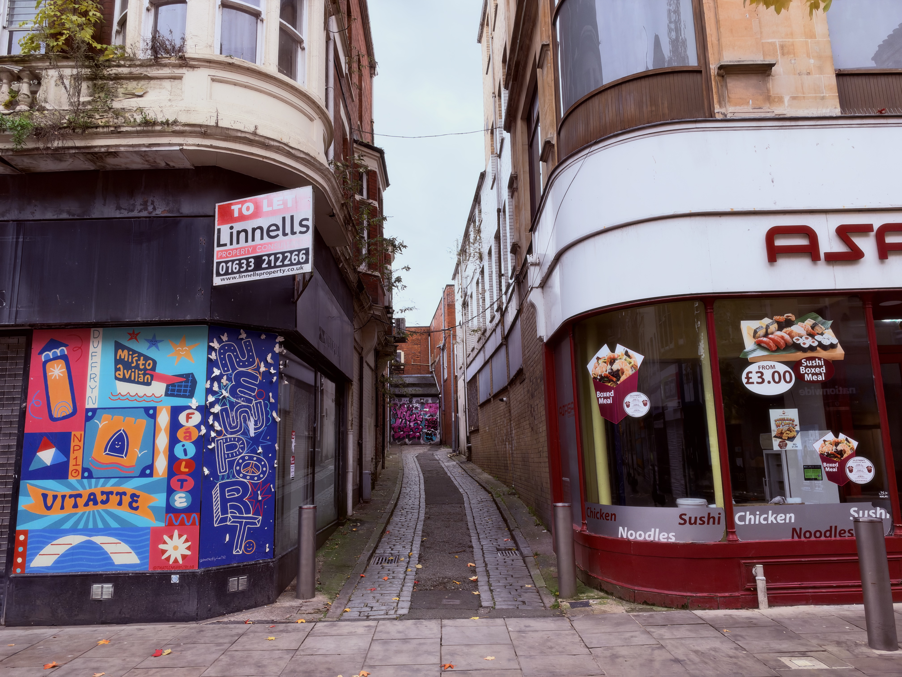
To understand how this court came to be, one must look back to the turn of the nineteenth century. In 1801, Newport was still a compact river port with a population of just 1,087 residents, clustered tightly along High Street, the Westgate, and the banks of the River Usk beneath the ancient parish church of St Woolos. However, the completion of the Monmouthshire Canal in the late 1790s triggered a rapid commercial and industrial expansion. The town was beginning to outgrow its medieval footprint, and landowners urgently sought direct transit routes between the old borough centre and the newly emerging shipping wharves downstream at Pillgwenlly.
Visitor Benjamin Heath Malkin, passing through in 1804 just a few years before the new street was staked out, left a blunt assessment of the old medieval core1:
“The interior of the town, however, disappointed us. Most of the houses are very mean, the streets ill paved, and what is worse, remarkably dirty.”
This commercial momentum led directly to the creation of Commercial Street. Conceived around 1807, the new thoroughfare was designed as a broad, straight thoroughfare cut through agricultural enclosures and gardens. By 1809, construction was actively under way.
September 1809 Parliamentary Notice
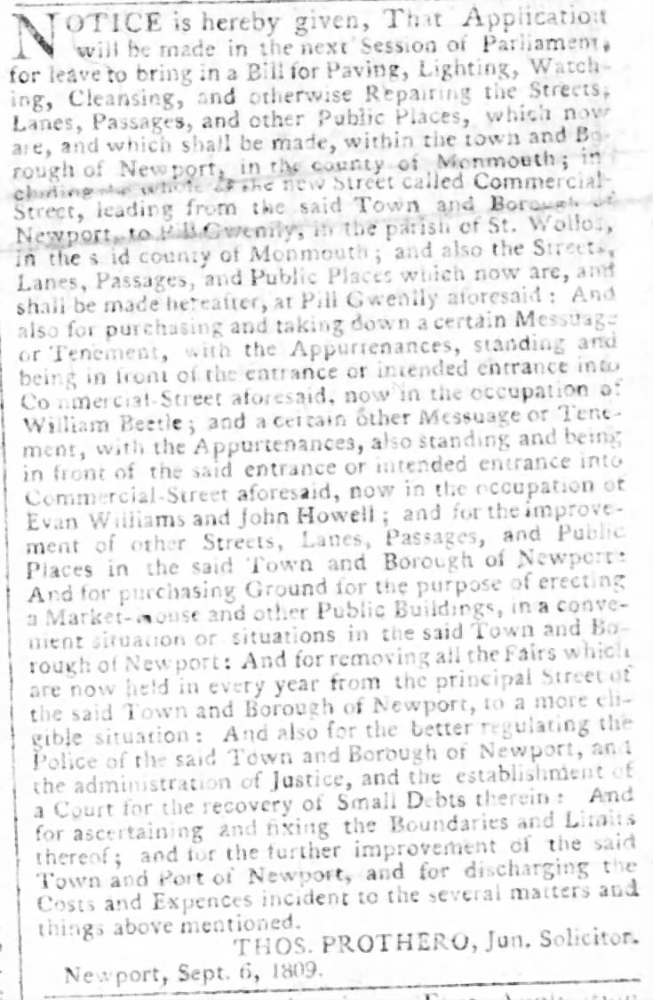
Scroll column to read • Click image to enlarge
In September 1809, the Tredegar Estate solicitor, Thomas Prothero, published a formal Parliamentary notice announcing an application for what became the 1810 Newport Improvement Act 50 Geo. III (1810) Parliamentary Act that formally straightened, widened, and renamed the southerly route from the Westgate to Pillgwenlly as Commercial Street. (50 Geo. III)2. The notice specifically sought compulsory purchase powers to demolish two older domestic dwellings—the houses of William Beetle, Evan Williams and John Howell—which blocked the northern entrance where the new highway joined the Westgate.
Even before the street was officially opened under the 1810 Act, pioneers were staking their claims along the projected line. Most notable was the Wesleyan Methodist congregation Nos. 156–158 Commercial Street Erected in 1808 on the western side of the staked route while the surrounding land was still open fields, immediately north of the future Newport School plot. , which erected a stone chapel on the western side of the staked route in 1808 (Nos. 156–158). Early denominational accounts describe this chapel as standing isolated in the open fields, well away from other buildings—a solitary outpost on the rural fringe that predated the paved street itself. It was on the vacant agricultural plot immediately adjoining the southern boundary of this chapel that the story of McCarthy’s Court truly began.
The Area Prior to Commercial Street (1750–1810)
Before the surveyors and road-builders laid out Commercial Street, the land west of the River Usk was an expanse of sloping meadows, orchards, and timber yards. Three historic surveys trace the gradual evolution of this ground across sixty years.
c. 1750s Borough Survey Map
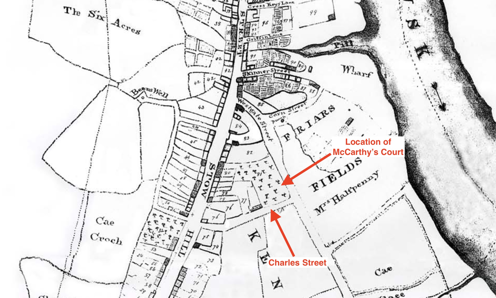
The earliest detailed record of this land appears on the borough survey map of c. 17503. At this date, the plot that would become McCarthy’s Court and its roadside frontage formed part of an enclosed agricultural holding recorded as Plot 81, held by Thomas Phillips, Gent. Plot 81 Proprietor Attorney and Tredegar agent who held the enclosed hillside orchard south of Westgate Street on the c. 1750 Newport borough survey. The map depicts this parcel as an enclosed hillside orchard sloping upwards towards the ridges of Stow Hill. To the east lay the rear burgage plots of Skinner Street and an early lane marked as “Corn Street”, complete with a town pump. To the north, the only major thoroughfare was the road leading from the Westgate, labelled on the plan as “Westgate Street”. South of this gate, there was no continuous road through the fields—only tracks and hedgerows separating private plots.
1794 Tredegar Estate Survey Map
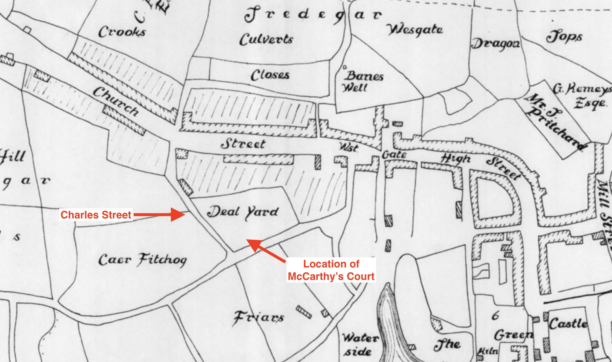
By 1794, when the Tredegar Estate commissioned a comprehensive survey of its urban margins, the agricultural character of the area was beginning to adapt to maritime trade. The survey marks the future corridor of Commercial Street crossing open enclosures named “Deal Yard” (a commercial timber storage yard reflecting Newport's expanding trade in imported Baltic timber), “Caer Fitchog”, and the broader “Friars” lands. On this map, the future line of Commercial Street appears simply as an informal hedgerow and cartway passing along the eastern edge of Deal Yard, utilised by farm traffic and hauliers skirting the borough boundary.
c. 1800 Archdeacon Coxe Plan
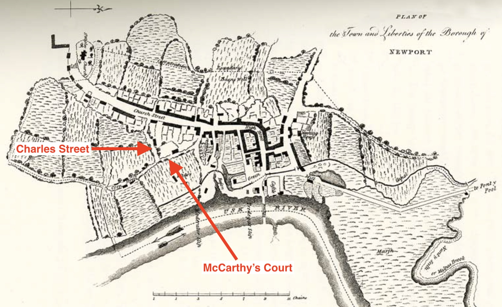
The final pre-Improvement phase is captured on the town plan published in Archdeacon William Coxe’s Historical Tour in Monmouthshire in 18004. On Coxe's map, the track running southwards from the Westgate across the Friars land toward Pillgwenlly is explicitly engraved as “Corn Street”. This reveals that before the name was restricted to the shorter parallel side street we know today, the southerly corridor was briefly referred to as an extension of Corn Street. When the 1810 Act was enacted, this thoroughfare was formally straightened, widened, and renamed Commercial Street, reflecting its role as the economic spine of the expanding town. The original track was superseded, creating the uniform building plots that were promptly leased to speculative builders and private gentlemen.
The School Arrives
In the final days of 1810, as the newly created Commercial Street was being opened to traffic, an ambitious notice appeared in the regional press announcing the establishment of a prestigious educational institution in Newport.
31 December 1810 Gloucester Journal Advert
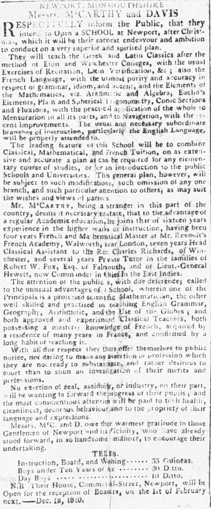
Scroll column to read • Click image to enlarge
Published on 31 December 1810 in the Gloucester Journal5, the prospectus announced that on Monday, 21 January 1811, a new classical and commercial boarding academy—to be known simply as the Newport School—would open its doors. The establishment was a joint enterprise between two schoolmasters: Callaghan McCarthy and Richard Davis.
To accommodate the academy, the partners took a building lease directly from Sir Charles Morgan and the Tredegar Wharf Company for the roadside plot immediately south of the 1808 Wesleyan Chapel. Here they oversaw the construction of a substantial, purpose-built complex, expending a staggering £4,000 on the buildings, schoolrooms, domestic quarters, and grounds over the next decade.
Who Was Callaghan McCarthy?
To the burgesses of Newport, Callaghan McCarthy might initially have seemed like an outsider, but he arrived with an extraordinary pedigree forged in some of the most rigorous educational institutions in Britain.
Callaghan McCarthy’s Academic and Tutorage References
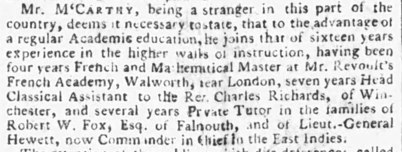
Born around 1771 or 1772, McCarthy had spent his formative years acquiring a deep mastery of mathematics, classical literature, and modern languages. A subsequent advertisement reveals that he had resided upwards of six years in France during his early adulthood, giving him an authentic fluency in spoken and written French that set him apart from typical provincial schoolmasters of the era.
His first recorded post in England was a four-year tenure, from approximately 1794 to 1798, as French and Mathematical Master at John Revoult’s celebrated academy Walworth, Surrey A prominent late-18th-century classical and commercial academy in South London where McCarthy taught French and mathematics (c. 1794–1798). in Walworth, Surrey. It was almost certainly during this period in historic Surrey that Callaghan met his future wife, Ann, who had been born in Reigate, Surrey, around 1768 or 1769. Ann was approximately three years his senior and would become his lifelong partner, managing the complex domestic affairs of his boarding schools.
Following his time in Surrey, McCarthy served for seven years, from roughly 1798 to 1805, as Head Classical Assistant to the Reverend Dr Charles Richards at Hyde Abbey School in Winchester Winchester Preparatory One of England’s foremost classical preparatory schools under Dr Charles Richards, counting future Prime Minister George Canning among its alumni. . Hyde Abbey was one of the foremost classical preparatory schools in the country, counting future Prime Minister George Canning among its alumni. Under Dr Richards, McCarthy was responsible for grounding young gentlemen in advanced Greek and Latin syntax, recitation, and Latin verse composition, preparing them directly for Oxford, Cambridge, and the great public schools.
Before making the move to South Wales, McCarthy took up posts as a resident private tutor to two prominent families. He first taught the sons of Robert Were Fox, Esq., of Falmouth—the distinguished Quaker shipping magnate, transatlantic packet agent, and intellectual pillar of the Royal Cornwall Polytechnic Society—and subsequently the family of Lieutenant-General Sir George Hewett, 1st Baronet, while Hewett was serving as Commander-in-Chief in India. When McCarthy chose to settle in Newport, he brought the high standards and educational expectations of the English gentry and mercantile elite directly to the Welsh frontier.
Daily Life, Boarding Standards, and the Material Culture of the Academy
Over the following two decades, advertisements in the Gloucester Journal and Bristol Mirror mapped the growth and everyday routine of the school, revealing a highly structured, immersive, and disciplined world.
1813 Newport School Prospectus
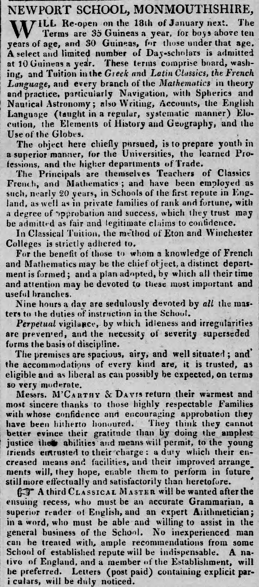
Scroll column to read • Click image to enlarge
The academic day was intensive. Instruction began promptly at 7:00 a.m. and, with regulated intervals for meals, exercise, and evening preparation, continued until 9:00 p.m. Capitalising on the masters' continental experience, spoken French was made a compulsory element of daily conversation outside the classroom—a progressive pedagogical method rarely found outside elite metropolitan academies.
The curriculum catered to both traditional aristocratic ambitions and modern commercial demands. In the classical department, pupils studied Latin and Greek authors, composition, and mythology for university matriculation. In the commercial department, overseen by Davis, boys were drilled in merchant’s accounts, book-keeping, mathematics, and fine penmanship. In addition, the school offered specialised naval and military training, including navigation, geography, coastal surveying, and the use of terrestrial and celestial globes, preparing pupils for entry into the Royal Navy, the East India Company, and the military colleges at Sandhurst and Woolwich. Accomplishments such as drawing, dancing, and fencing were offered as optional extras taught by visiting masters.
Terms and Requirements
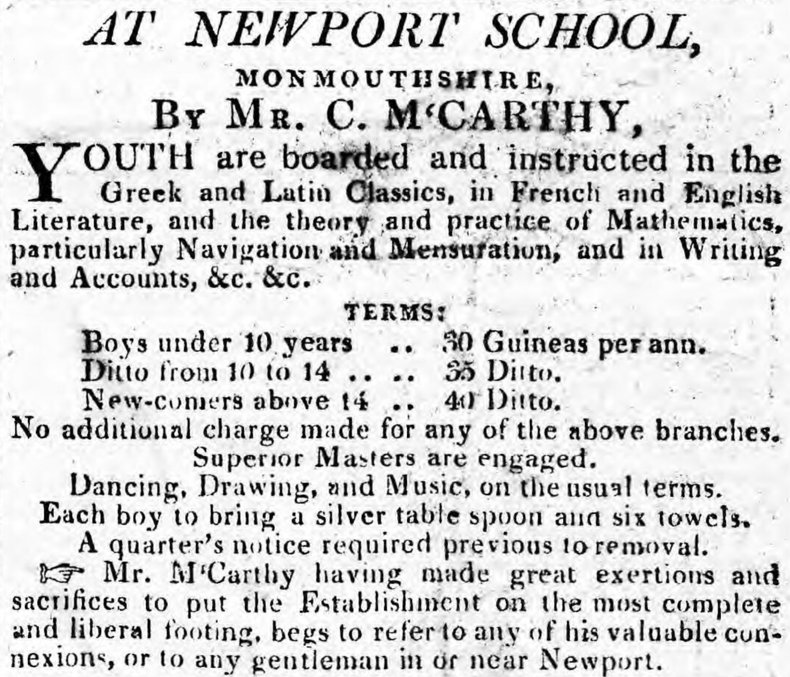
The Economics of Boarding: Silver Spoons and Towels
The financial terms of the school immediately establish the social status of its clientele. Board and tuition started at 30 guineas per annum for boys under ten, and 35 guineas for those above ten, rising to 40 guineas by 1813. In an era when a skilled Welsh artisan or collier earned between £30 and £50 a year, spending 35 to 40 guineas per boy—before factoring in laundry, books, and extras—placed the school firmly out of reach for ordinary townspeople. The pupils were the sons of the regional gentry, coal and iron masters, affluent Bristol and Newport merchants, shipowners, and senior clergy.
The advertisements repeatedly emphasised that each young gentleman had a bed to himself. This was a vital selling point in the early nineteenth century, when communal bed-sharing was still widespread in standard boarding establishments and posed severe hygiene and health risks.
In July 1816, the school adjusted its regulations: in lieu of the customary entrance fees charged at metropolitan academies, each incoming boarder was required to provide six towels and a silver spoon (later specified in his 1820 terms as a silver table spoon)6. Borrowed from prestigious English public schools, this rule served multiple functions: it prevented cross-contamination of domestic linens, fostered genteel dining etiquette, and accumulated a valuable cache of solid silver cutlery for the dining hall.
While McCarthy and Davis directed academic instruction, the domestic department was supervised by Mrs Ann McCarthy, who had charge of the health, personal cleanliness, linen, and dietary regimen of up to thirty resident boarders.
Tragedy in the Dormitory: The Latin Elegy for James Beavan (1814)
Behind the dignified prospectuses, the boarding academy was not immune to personal tragedy. In July 1816, seventeen-year-old pupil James Beavan, in his eighteenth year, contracted tuberculosis (consumption) and died within the schoolhouse.
Grief-stricken, Callaghan McCarthy composed a formal funeral elegy of sixteen elegiac couplets (thirty-two lines of classical Latin verse), published under his initials “C. M‘C.” in the regional press7. The poem provides an intimate glimpse into the schoolroom community, capturing the bedside vigil of McCarthy, his staff, and the "throng of boys” (puerilis turba) praying as their companion passed away.
Latin Poem from Newspaper
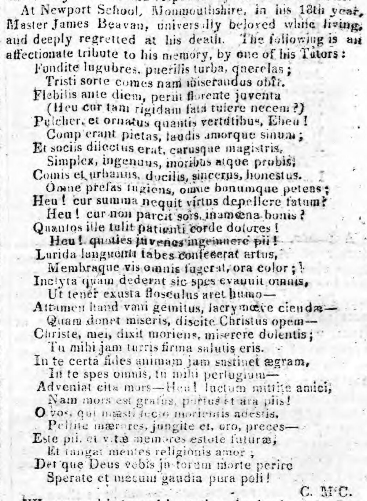
Scroll column to read • Click image to enlarge
| Original Latin Text (C. M'C.) | English Translation |
|---|---|
| Fundite lugubres, puerilis turba, querelas; Tristi sorte comes nam miserandus obiit. |
Pour forth your mournful plaints, O throng of boys! For by a sad lot your pitiable companion has died. |
| Flebilis ante diem, periit florente juventa (Heu cur tam rigidam fata tulere necem?) |
Much wept before his day, he perished in flowering youth— (Alas, why did the Fates bring so harsh a death?) |
| Pulcher, et ornatus quantis virtutibus, Eheu! Comp’erant pietas, laudis amorque sinum; |
Fair was he, and adorned with what great virtues—alas! Piety and love of praise had filled his breast; |
| Et sociis dilectus erat, carusque magistris, Simplex, ingenuus, moribus atque probis; |
And he was beloved by his companions, and dear to his masters, Simple, noble-hearted, and of upright character; |
| Comis et urbanus, docilis, sincerus, honestus, Omne nefas fugiens, omne bonumque petens; |
Courteous and refined, teachable, sincere, and honourable, Fleeing all wrongdoing, and seeking every good; |
| Heu! cur summa nequit virtus depellere fatum? Heu! cur non parcit sors inamœna bonis? |
Alas! Why cannot the highest virtue ward off fate? Alas! Why does harsh fortune not spare the good? |
| Quantos ille tulit patienti corde dolores! Heu! quoties juvenes ingemuere pii! |
How great the pains he bore with a patient heart! Alas, how often did his pious young companions groan! |
| Lurida languenti tabes confecerat artus, Membraque vis omnis fugerat, ora color; |
A ghastly wasting sickness (consumption) had consumed his languishing limbs, All strength had fled his body, all colour from his face; |
| Inclyta quam dederat sic spes evanuit omnis, Ut tener exusta flosculus aret humo— |
Thus vanished all the glorious hope he had promised, Even as a tender flower withers upon the parched earth— |
| Attamen haud vani gemitus, lacrymæve ciendæ— Quam donet miseris, discite Christus opem— |
And yet, no empty groans or tears are to be stirred up: Learn what aid Christ gives unto the afflicted! |
| Christe, mei, dixit moriens, miserere dolentis; Tu mihi jam turris firma salutis eris. |
“O Christ,” the dying youth cried, “have mercy upon my suffering; Thou shalt now be to me a strong tower of salvation. |
| In te certa fides animam jam sustinet ægram, In te spes omnis, tu mihi perfugium— |
In Thee sure faith now sustains my sick soul, In Thee is all my hope, Thou art my refuge— |
| Adveniat cita mors—Heu! luctum mittite amici; Nam mors est gratus, portus et ara piis! |
Let swift death come!—Alas, cast away grief, my friends, For unto the pious, death is a welcome harbour and altar!” |
| O vos, qui mæsti lecto morientis adestis, Pellite mœrores, jungite et, oro, preces— |
O you, who stand mournfully by the bed of the dying, Banish your sorrow, and join, I pray, your prayers: |
| Este pii, et vitæ memores estote futuræ; Et tangat mentes religionis amor; |
Be ye pious, and mindful of the life to come; And may the love of religion touch your minds; |
| Detque Deus vobis justorum morte perire Sperate et mecum gaudia pura poli! |
And may God grant that you die the death of the righteous— Hope, and share with me the pure joys of the heavens! |
The poem stands as undeniable physical proof of McCarthy’s classical scholarship, his pastoral care for his boarders, and his deep, articulate Christian piety.
Partnership Dissolution and Mounting Debts (1818–1822)
Operating a premier academy required immense capital. In the economic depression that followed the Napoleonic Wars, financial pressures began to fracture the partnership.
On 12 January 1818, McCarthy and Davis formally dissolved their partnership. A legal notice published in the London Gazette8 and regional newspapers announced that the joint enterprise was terminated, with McCarthy assuming sole responsibility for the school and all its liabilities. The primary burden was the £4,000 incurred in erecting the premises, leaving McCarthy heavily indebted to his former partner for his share of the capital outlay.
In December 1821, McCarthy published a detailed statement reminding patrons of the £4,000 expended on the property. By 1822, legal pressure from Richard Davis forced McCarthy to execute a formal power of attorney to manage and settle Davis's mortgage demands. Though the school remained academically respected, McCarthy was trapped under a mountain of building debt that would shadow the property for the rest of his life.
The “Bread Slander” and Abrupt Retirement (1828–1829)
Running an elite boarding school also exposed McCarthy to local gossip and commercial rivalry. In the late 1820s, malicious whispers began circulating in Newport alleging that the master was starving his scholars.
21 March 1829 Cambrian Advert
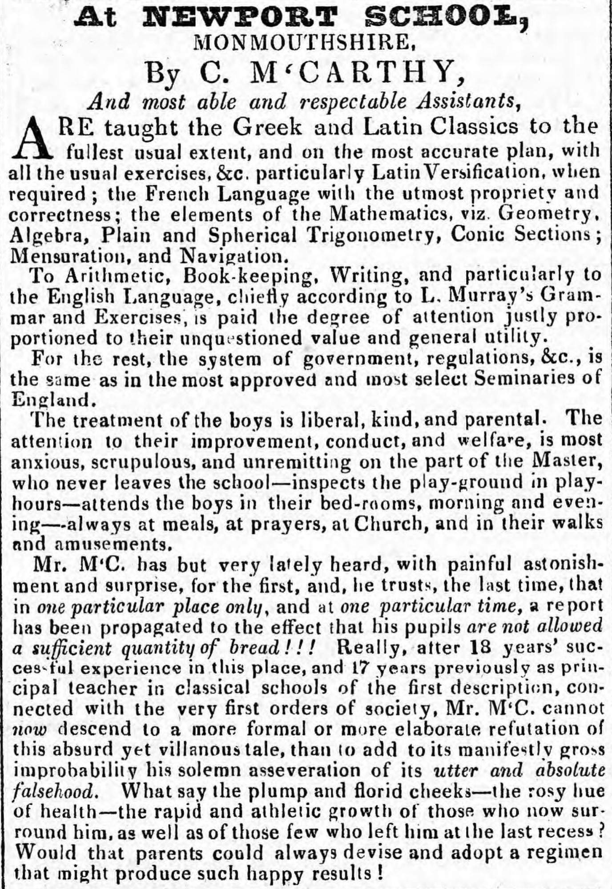
Furious at this attack on his reputation, McCarthy placed a blistering public rebuttal in The Cambrian on 21 March 18299, branding the whispering campaign an “absurd yet villanous tale”:
“Mr. M‘C. has but very lately heard, with painful astonishment and surprise, for the first, and, he trusts, the last time, that in one particular place only, and at one particular time, a report has been propagated to the effect that his pupils are not allowed a sufficient quantity of bread!!! Really, after 18 years’ successful experience in this place, and 17 years previously as principal teacher in classical schools of the first description... Mr. M‘C. cannot now descend to a more formal or more elaborate refutation of this absurd yet villanous tale, than to add to its manifestly gross improbability his solemn asseveration of its utter and absolute falsehood. What say the plump and florid cheeks—the rosy hue of health—the rapid and athletic growth of those who now surround him, as well as of those few who left him at the last recess? Would that parents could always devise and adopt a regimen that might produce such happy results!”
In an amusing historical irony, the very courtyard where McCarthy had to defend his bread rations would become the site of Alfred Bland's massive steam bakery fifty years later.
July 1829 Denial Advert & 28 November 1829 Handover Notice
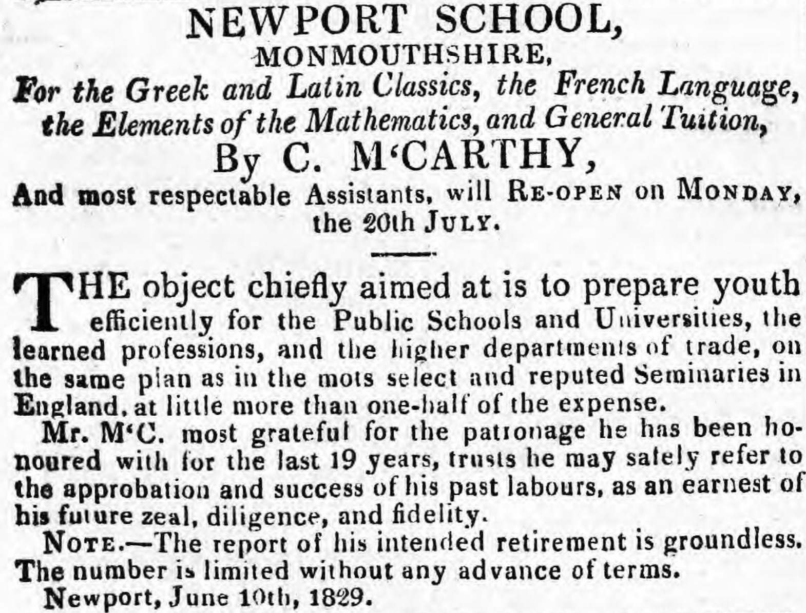
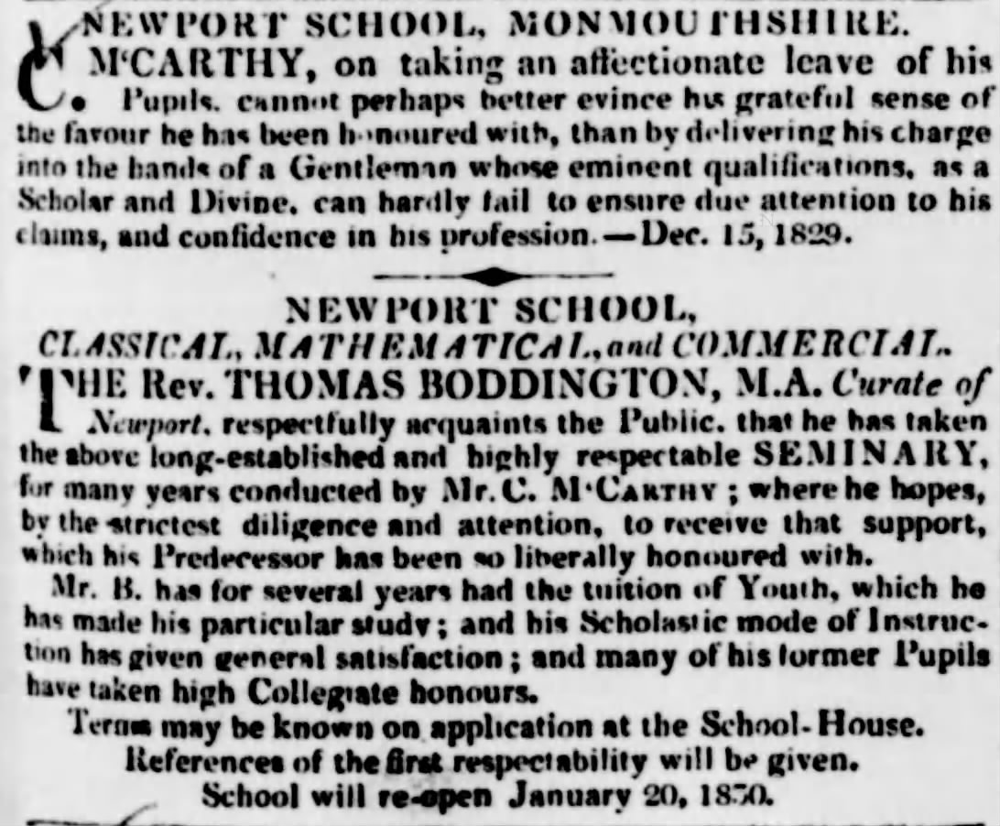
The strain, however, was taking its toll. In July 1829, fighting further rumours, McCarthy published a notice insisting that “the report of his intended retirement is groundless.”10
Yet just four months later, failing health evidently overwhelmed him. On 28 November 1829, McCarthy abruptly surrendered his life’s work, publishing a poignant farewell to his scholars and announcing that he was handing the academy over to a “Scholar and Divine.”11
Immediately beneath McCarthy's note, the Reverend Thomas Boddington, A.M., Curate of Newport, announced that he had taken possession of the “School House” to conduct his own classical seminary. After nineteen years, Callaghan McCarthy’s tenure as active headmaster had come to an end.
Change of Ownership and Spatial Partitioning (1831–1849)
The handover of the academy to the Reverend Thomas Boddington in November 1829 marked the beginning of two decades of profound architectural and social transformation. Callaghan McCarthy had retired from active teaching, but he and his wife Ann remained closely tied to the property, residing in a domestic dwelling within the grounds while Boddington conducted his school in the main building.
Last Will, Probate & Llandaff Deposition
Diocese of Llandaff • Ref. LL/1831/97 W (4 Sheets)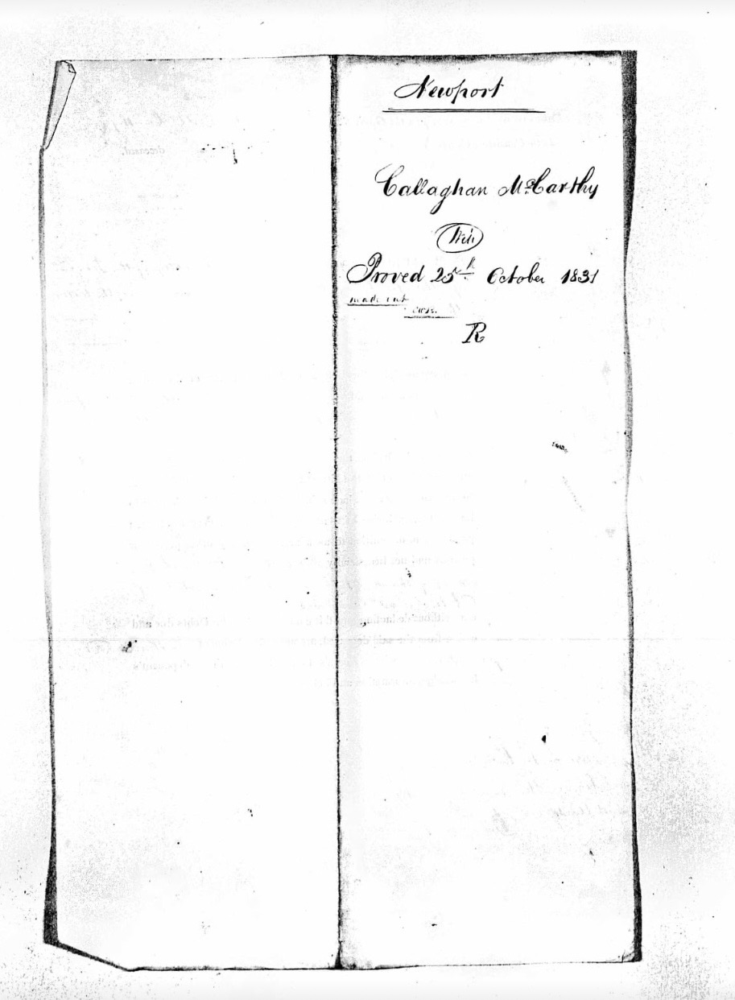
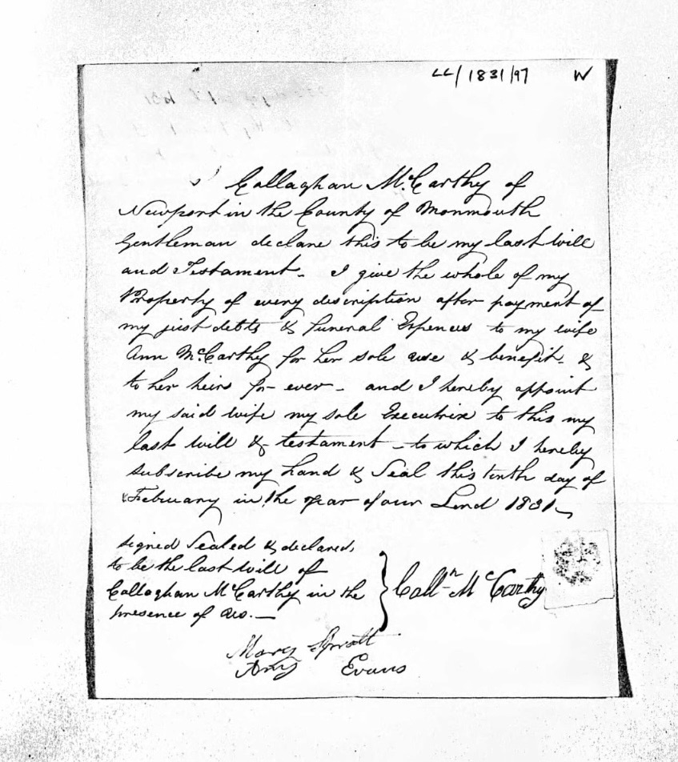
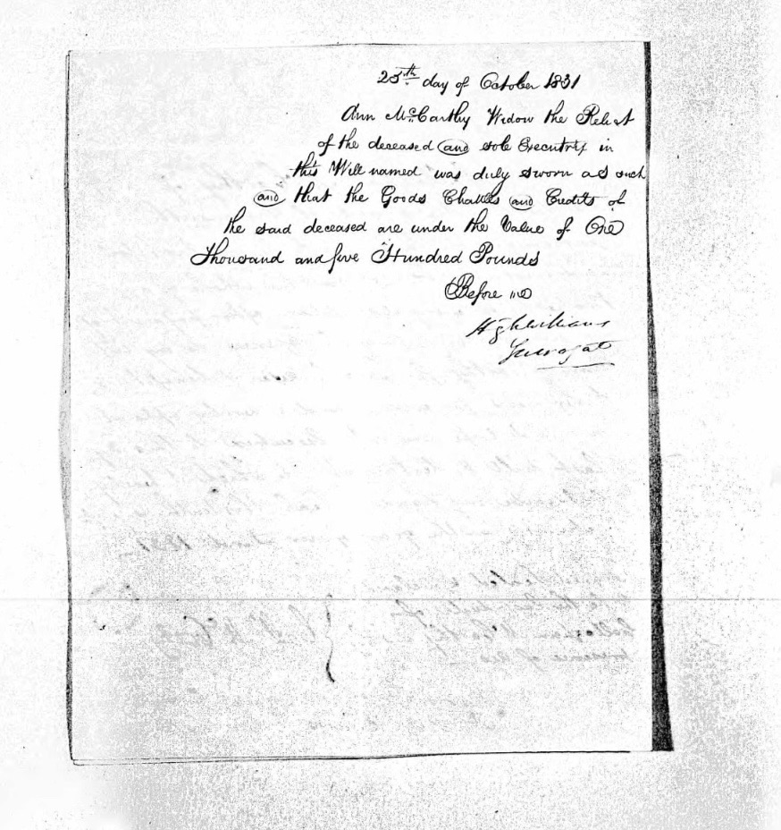
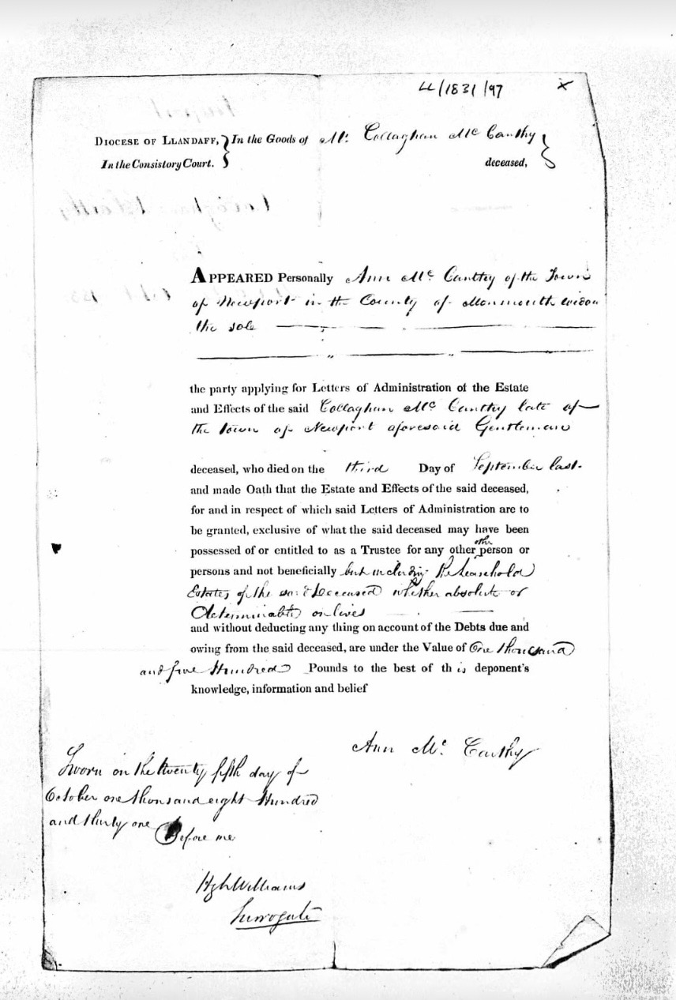
On 10 February 1831, aware that his health was rapidly failing, McCarthy drafted his last will and testament12, bequeathing his entire estate and all leasehold interests unconditionally to his wife, Ann. Seven months later, on Saturday, 3 September 1831, Callaghan McCarthy passed away at the age of fifty-nine. He was buried on 8 September in St Woolos churchyard, where his surviving headstone at grave location B56 formally recorded him with the gentlemanly status of “Calla[ghan] McCarthy, Gent.”
McCarthy’s passing was immediately followed by a bitter public scandal. In his final days, the Vicar of St Woolos, the Reverend William Isaacson, had directed Curate Boddington to attend the dying schoolmaster and administer the Holy Sacrament. Boddington refused. On the Sunday following McCarthy's funeral, Boddington mounted the pulpit at St Woolos and delivered a provocative sermon condemning deathbed communions, arguing that individuals often demanded the sacrament without a true understanding of its solemn nature, treating it merely as a passport to heaven.
The sermon ignited fierce indignation across Newport. Radical reformers, led by draper John Frost, condemned Boddington's conduct as cruel and uncharitable toward an esteemed scholar whose orthodox piety had been demonstrated throughout his twenty years in the town. Frost and other prominent citizens organised public meetings of protest at the King’s Head Hotel and submitted a formal complaint to the Bishop of Llandaff. Although Boddington published an elaborate defence in the Monmouthshire Merlin13—insisting he had never named McCarthy from the pulpit and accusing the Bishop of acting “upon the bare assertion of Mr. Isaacson”—the public backlash made his position in the town untenable, forcing him to abandon the schoolhouse.
Boddington’s Defence in the Monmouthshire Merlin
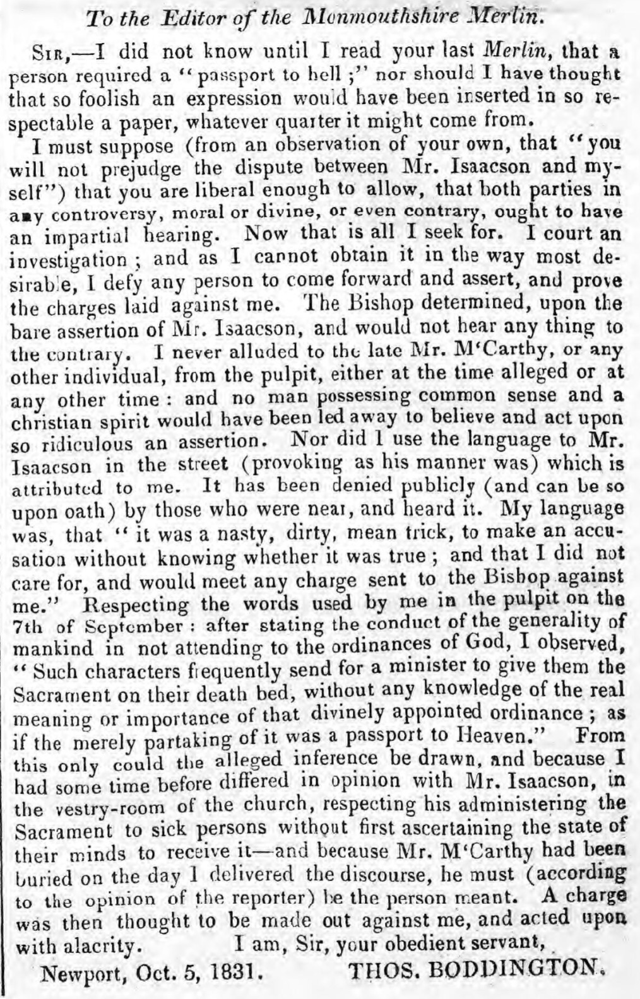
Scroll column to read • Click image to enlarge
Winter 1831–1832 Auction Notice / June 1832 Hunt Advert
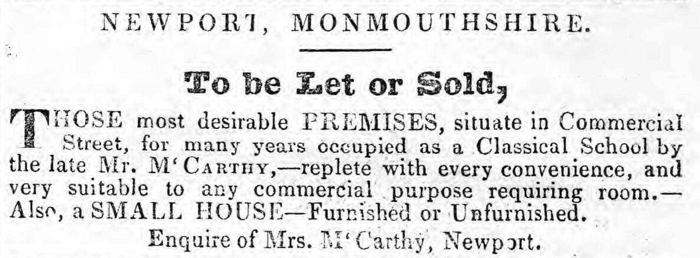
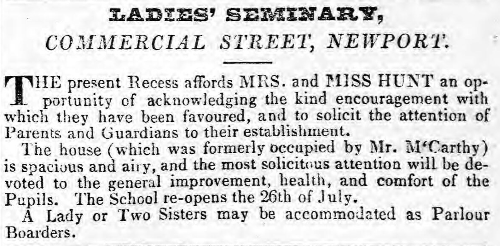
Following Boddington's departure, Ann McCarthy proved her husband's will in the Diocesan Consistory Court at Llandaff on 25 October 1831, swearing the gross estate under £1,500. However, the crushing mortgage liabilities originally incurred during the £4,000 building campaign in 1811 remained unsettled. In the winter of 1831 and 1832, auctioneer Thomas Davis advertised the premises to let or for sale, noting that the property was peculiarly adapted for educational or commercial purposes requiring extensive space, and mentioning that a small separate house stood alongside the main academy.
In June 1832, Mrs Catherine Hunt and her daughter Emily stepped into the breach, announcing the opening of a ladies' boarding seminary. Their advertisement explicitly identified the location, stating that their new establishment was held at “the residence of the late Mr. M'Carthy, Commercial Street.”
The spacious nature of the former schoolhouse continued to serve the wider public. In December 1832, during the lively campaigning for the first parliamentary election following the Great Reform Act, the local press recorded a major political assembly of town electors taking place in a large room or hall upon these very premises. This confirmed that McCarthy's original institutional hall remained an essential community gathering space. The Hunts maintained their ladies' seminary here until late 1835, when they relocated their school to Stow Hill.
The physical layout of the academy at the close of its educational era is captured on John Wood’s 1836 Plan of the Town of Newport. Surveyed just as the Hunts were vacating the premises, Wood’s map depicts the property on the western flank of Commercial Street as a substantial detached building standing clear of adjoining blocks, with an open side cartway leading into deep rear grounds and hillside gardens. It was this spacious Georgian institutional shell that was about to undergo a complete commercial rebirth.
John Wood’s Plan of Newport (1836)
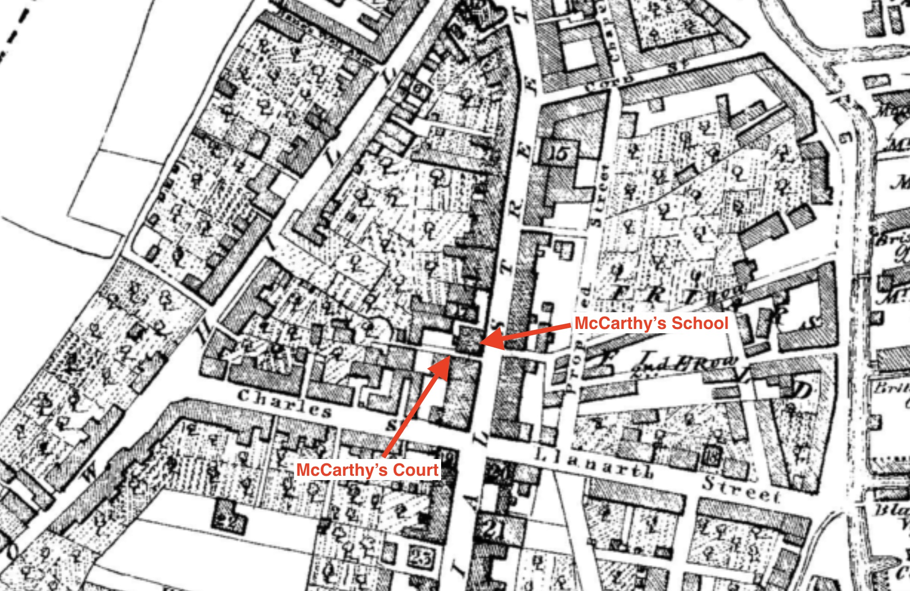
The Frontage Rebuilt: Herbert Williams and Thomas Waters
The departure of the Hunt seminary in late 1835 left the owners with a large roadside property at a time when Commercial Street was rapidly evolving from a quiet residential thoroughfare into the premier retail street of the borough. In June 1836, chemist and druggist Herbert Williams announced that he had opened his new “Medical Hall” in Commercial Street14.
June 1836 Auction Advert (Lots 1 & 2 near the Parrot)
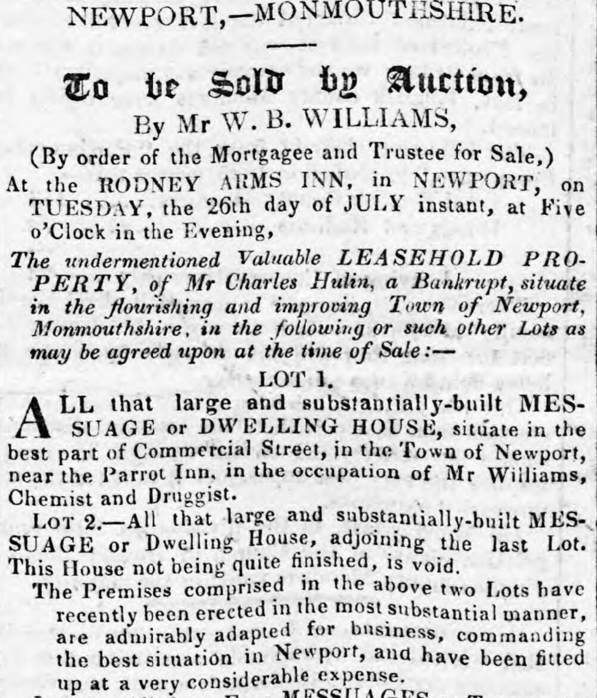
Just weeks later, a property auction notice published in July 1836 revealed the extensive architectural work underway along the street frontage15. The notice advertised two adjoining properties situated in the best part of Commercial Street, near the Parrot Inn. Lot 1 was described as a large, substantially built dwelling-house and shop in the occupation of Herbert Williams, chemist. Lot 2 was an adjoining dwelling-house that was void and recorded as “not being quite finished.” The advertisement emphasised that the premises comprised in both lots had “recently been erected in the most substantial manner” and fitted up at considerable expense.
In the terminology of early-nineteenth-century building and auction sales, when an older institutional shell was gutted, fitted with new party walls, re-fronted, and adapted for modern shopfronts, it was standard practice to describe the work as a recent erection. This July 1836 notice captures the physical transition in real time: Williams had completed and occupied his chemist shop at No. 154, while the northern half of the frontage at No. 155 was still in the hands of carpenters and plasterers.
1838 Property Sale Notice (Williams, Waters, and Rear Tenements)
By 1838, a subsequent property sale notice confirmed that the structural conversion was fully settled. The street frontage was officially described as “two new buildings”, occupied respectively by Herbert Williams at No. 154 and solicitor Thomas Waters at No. 155.
Old Wesley Building Watercolour
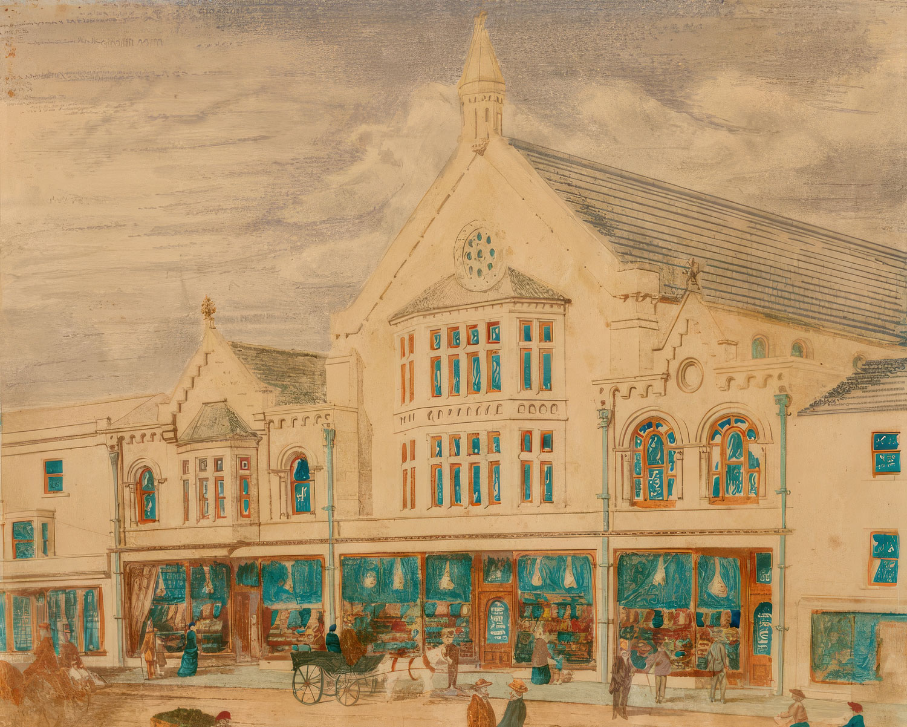
This pair of newly fronted properties is clearly identifiable in surviving visual records. In the period illustration of the adjoining Wesleyan Chapel (depicted as the Old Wesley Building in an image by an unknown artist), the building standing immediately to the left, or south, of the chapel is a handsome three-storey classical Georgian block finished in smooth render, featuring a flat roof parapet, rectangular sash windows, a first-floor bay window, and two commercial shop units at street level. This elevation represents the very street frontage reconstructed between 1836 and 1838 for Williams and Waters, terminating at the open side passage leading into the rear court.
The Rear Enclave: The Long Room and Woodbine Cottage
While the roadside frontage facing Commercial Street was divided into modern retail and professional premises, the deep courtyard behind remained intact.
1837 Advert to Let (Williams' 30-to-40-Foot Room)
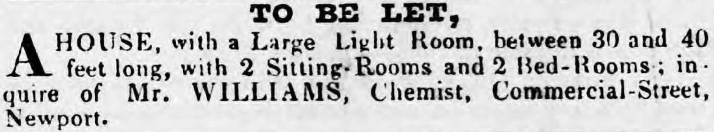
In 1837, Herbert Williams placed an advertisement in the regional press offering to let a house to the rear16. The notice described an extraordinary property: a house containing two sitting rooms, two bedrooms, and a “Large Light Room, between 30 and 40 feet long.” In early-nineteenth-century Newport, where domestic rooms rarely exceeded twelve to fifteen feet in width, a residential property containing a hall forty feet long was an absolute anomaly. This large room was Callaghan McCarthy’s original 1811 schoolroom hall, preserved behind the new chemist shop.
Further up the rising ground of the plot, stretching back towards Stow Hill, lay an elevated garden residence known as Woodbine Cottage. Throughout the 1830s and 1840s, this secluded house served as a home for prominent clergymen and professional men. In February 1830, a birth notice recorded the lady of the Reverend William Isaacson, Vicar of St Woolos, giving birth to a son at Woodbine Cottage. In December 1836, the Reverend James Francis, Minister of St Paul's Church, announced that he had enlarged his house at Woodbine Cottage in order to receive three young gentlemen as private boarding pupils to prepare them for public schools and universities.
By 1838, an advertisement to let Woodbine Cottage instructed prospective tenants to apply on the premises or to Thomas Waters, the solicitor occupying the new front office at No. 155.
1856 Advert to Let or Sell Woodbine Cottage
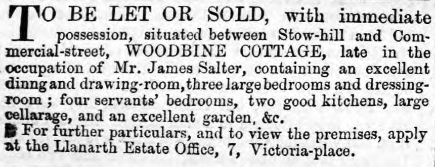
The true architectural scale of Woodbine Cottage was revealed in an 1856 advertisement published by the Llanarth Estate Office. The notice described a substantial gentleman’s villa situated between Stow Hill and Commercial Street, containing an excellent dining room and drawing room, three large family bedrooms and a dressing room, four servants' bedrooms, two kitchens, extensive cellarage, and a large private garden. Woodbine Cottage was not a modest country dwelling, but a sizable seven-bedroom gentleman's residence commanding the elevated ground overlooking the lower courtyard.
The topographical layout of this entire block is captured in remarkable detail on a map published in January 185417. Surveyed prior to the mid-Victorian commercial expansions, the plan shows the open, uncovered lane of McCarthy’s Court branching off Commercial Street directly between the flank wall of No. 153 and the new shopfront of No. 154. Passing behind the street frontage, the lane skirts the four rear cottages and former schoolroom before terminating at the foot of an expansive, formally laid-out garden enclave rising towards Stow Hill. Perched at the crest of these elevated grounds sits the substantial detached footprint of Woodbine Cottage, visually confirming the secluded setting described in contemporary letting notices.
1854 Map
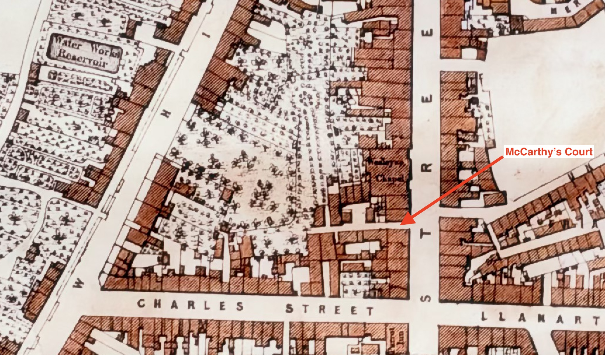
Ann McCarthy in Caerleon and the 1849 Clearance Sale
While the commercial frontage was occupied by Williams and Waters and Woodbine Cottage housed gentlemen tenants, what became of Callaghan McCarthy's widow?
Following the financial restructuring of the estate in the early 1830s, Ann McCarthy moved out of Newport across the River Usk to Caerleon (Ultra Pontem), residing in Christchurch parish with her sister, Margaret Broughton. The decennial census of 6 June 1841 records Ann living in Ultra Pontem with Margaret18. Moving out of Newport allowed Ann to rely on family support, particularly as she became afflicted with severe paralysis, while continuing to draw rental income from subletting her retained property interests in Newport.
6 September 1849 Auction Notice
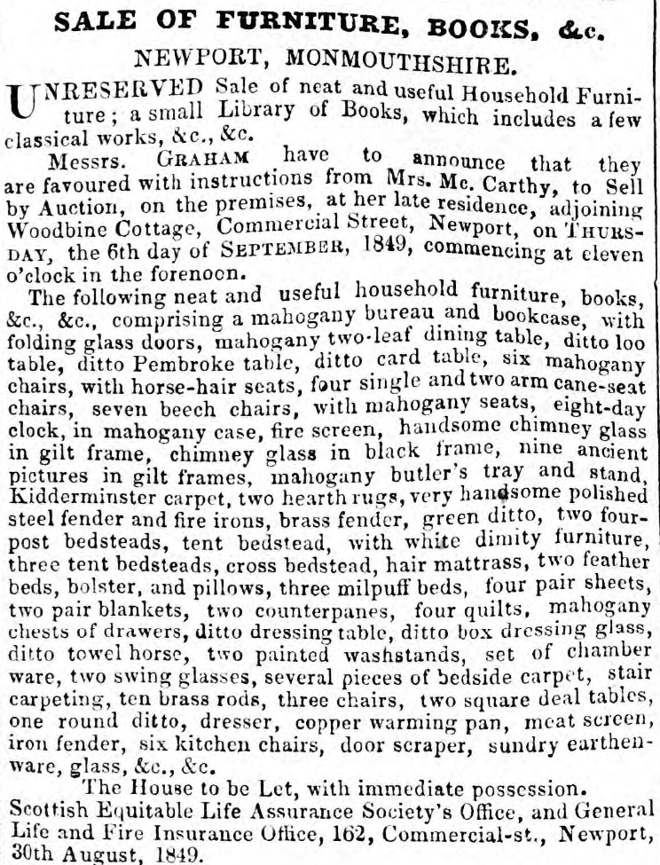
Scroll column to read • Click image to enlarge
Ann maintained her legal and domestic connection to Commercial Street for eighteen years after Callaghan's death. This tenure was brought to a formal close in late summer 1849. An auction notice published in the Monmouthshire Merlin on 30 August 184919 announced that on Thursday, 6 September, auctioneers Messrs. Graham would conduct an unreserved public sale of household furniture and personal effects:
“…on the premises, at her late residence, adjoining Woodbine Cottage, Commercial Street, Newport, the property of Mrs. M'Carthy...”
The auction inventory provides a vivid catalogue of the domestic belongings of the former master and matron of the Newport School. Sold off on the premises were four-post and tent bedsteads, feather beds, horse-hair chairs, a mahogany dining table, card and tea tables, chimney glasses in gilt frames, an eight-day mahogany clock, and nine ancient pictures in gilt frames.
Most poignantly, the catalogue included “a small Library of Books, which includes a few classical works.” These classical volumes were the personal working library of Callaghan McCarthy, preserved by his widow beside Woodbine Cottage for nearly two decades after his death. At approximately eighty years of age, Ann finally relinquished housekeeping in Newport, selling off the heavy Regency furnishings and books to live out her remaining years in Caerleon, where the 1851 census recorded her as an eighty-two-year-old invalid widow supported by a resident nurse-companion and house servant.
McCarthy’s Court
While the frontage facing Commercial Street had been transformed into modern retail shops, the land behind was undergoing its own dramatic evolution. By the late 1830s, the former playgrounds, domestic yards, and outbuildings of Callaghan McCarthy's academy were being adapted into high-density cottage dwellings.
1838 Property Sale Notice (Williams, Waters, and Four Tenements)
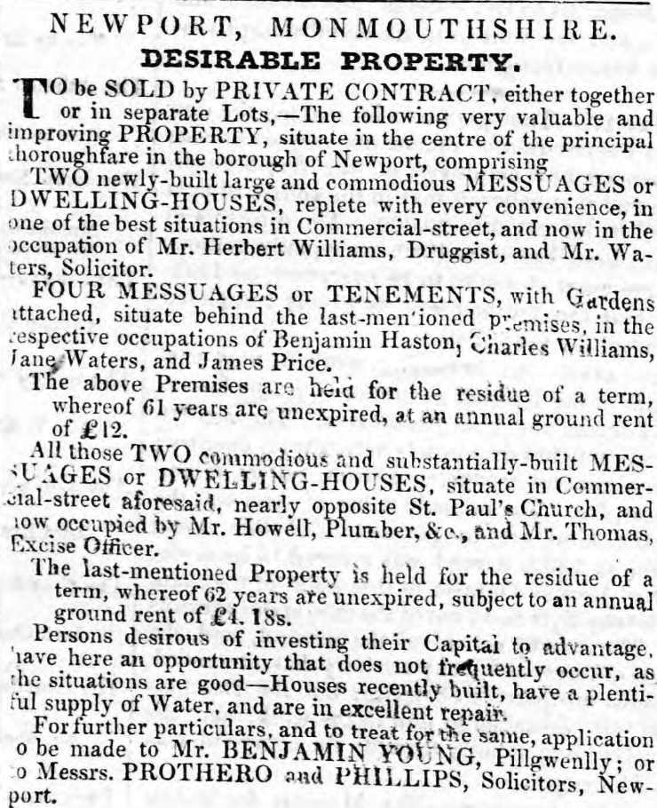
The 1838 property sale notice provides the first detailed snapshot of this transition. Directly behind the two new front buildings occupied by Herbert Williams and Thomas Waters, the notice recorded four messuages or tenements with gardens attached. These four cottages were already tenanted, occupied respectively by Benjamin Haston (Horton), Charles Williams, Jane Waters, and James Price. Whilst not explicitly mentioned as living in McCarthy's Court, they may well have given it as an address if asked. These four properties were first mentioned in an advert of 1836 earlier in this article which is possibly when they were first built.
The subsequent division of this holding is documented in an auction notice published in the Monmouthshire Merlin on 20 April 1839. Offering the premises at the Rodney Arms Inn, auctioneer John Williams advertised Lot 1 not as the full pair, but as a single portion:
“ONE newly-built, large, and commodious MESSUAGE or DWELLING-HOUSE... in Commercial-street, and now in the occupation of Mr. Waters, Solicitor.” Situated directly behind Waters’ premises were “Two neat COTTAGES, with Gardens attached, behind the last-mentioned Premises, in the respective occupations of Benjamin Horton and Charles Williams.”
Crucially, the 1839 notice specifies an apportioned ground rent of exactly £6 per annum—precisely half of the £12 ground rent recorded for the combined property in 1838. Herbert Williams (or his landlord) had evidently secured the southern half at No. 154, leaving Waters’ northern half (No. 155) and its two rear cottages to be auctioned independently. This confirms that the front messuages were the street-facing properties, while the rear cottages housed the working-class tenants who would soon populate the census schedules.
The 1839 Partition Auction
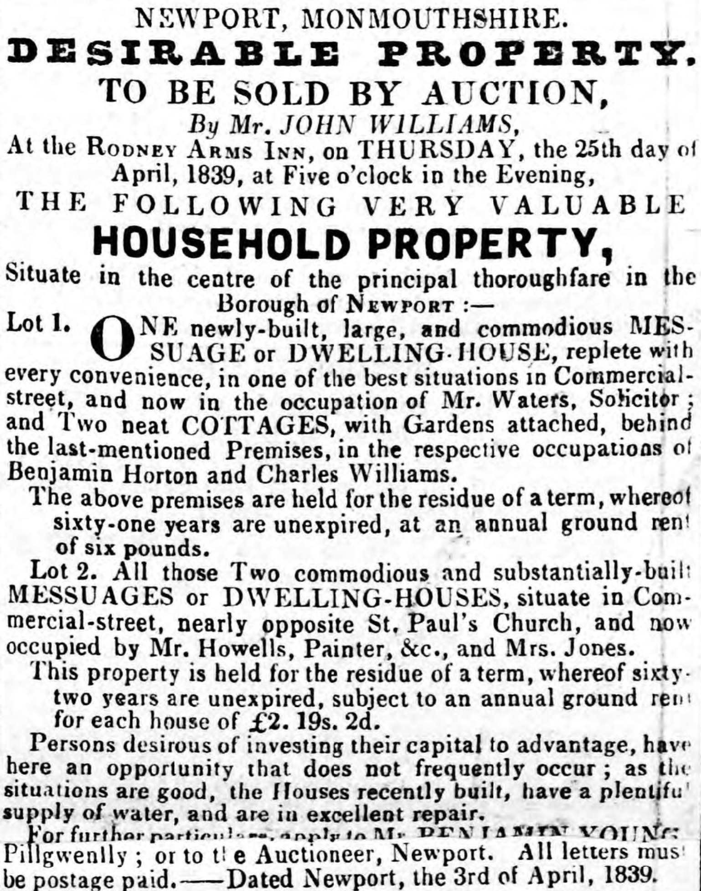
1841 Census Returns (HO 107/751/19)
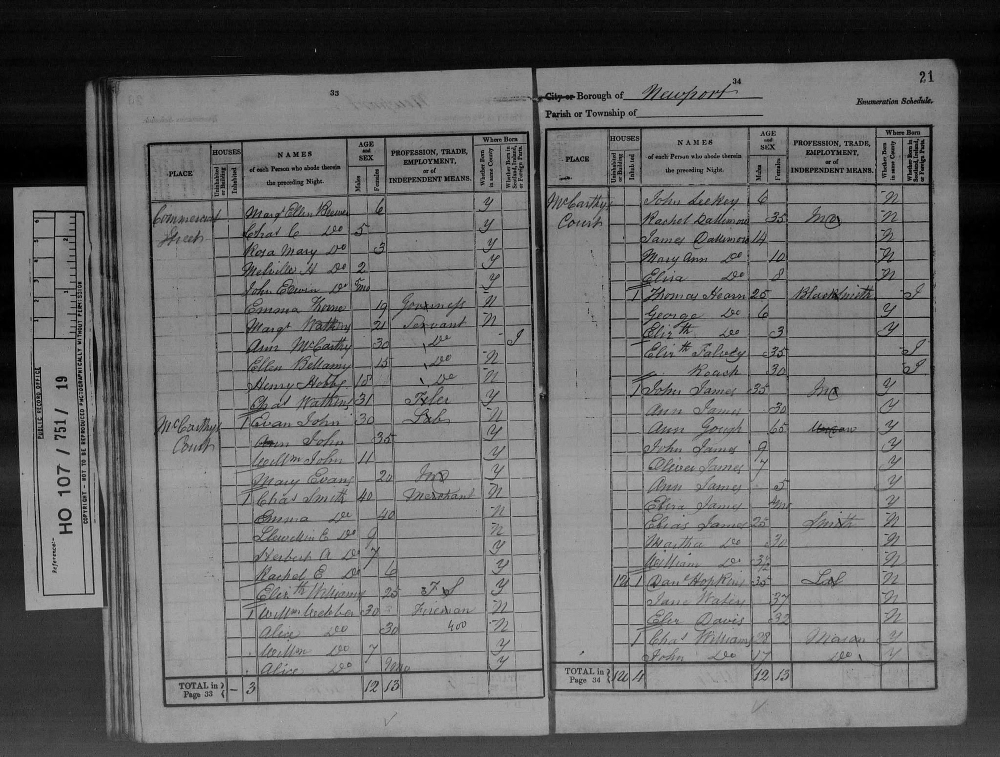
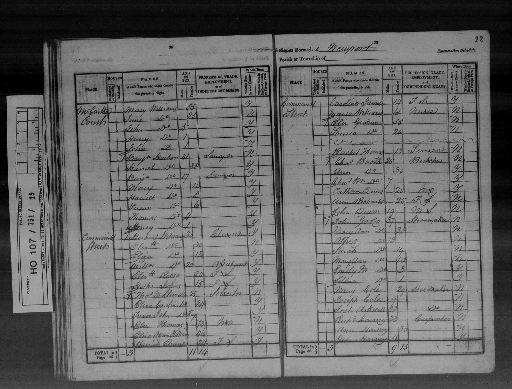
Three years later, the decennial census taken on 6 June 1841 confirmed that this emerging cluster of dwellings had officially acquired the name McCarthy’s Court. The census enumerator’s walk order mapped the physical layout of the block with remarkable precision. Moving northwards along the west side of Commercial Street, the enumerator recorded surgeon Jehoiada Brewer at No. 153 before turning off the pavement down the narrow side passage into the private lane:
[Commercial Street Frontage]
No. 153: Jehoiada Brewer (Surgeon) & household
[Turns down open passage into the court]
McCarthy's Court:
- Charles Watkins (Tailor) & family
- Evan John (Labourer)
- Charles Smith (Merchant)
- William Webber (Fireman)
- Rachel Dallimore (Independent)
- Thomas Hearn (Blacksmith)
- John James (Labourer) & Elias James (Smith)
- Daniel Hopkins (Labourer)
- Charles Williams (Mason) & family
- Benjamin Horton (Sawyer) & family
[Returns to Commercial Street Frontage]
No. 154: Herbert Williams (Chemist & Druggist)
No. 155: Thomas Morgan Llewellin (Solicitor)
Nos. 156–158: Wesleyan Methodist ChapelThe 1841 return reveals a vibrant community of forty-five residents across eight separate working households. Crucially, the occupants included sawyer Benjamin Horton and mason Charles Williams—the very tenants named in the 1838 deed. The court had not been laid out as speculative back-to-back slums, but had grown out of the adaptation of the academy's domestic wings, workshops, and four original rear tenements.
Over the middle decades of the nineteenth century, the spelling of the name began to shift in popular and official usage. On the Ordnance Survey town plan of 1882 and the Charles Goad Fire Insurance Plan of 1888, the lane was engraved as Macarthy’s Court. This slight variation reflected the common phonetic pronunciation of the name in Victorian Newport, where the traditional Irish prefix Mc was routinely transcribed phonetically as Mac.
Surviving Street Nameplate: “McCarthy’s Court”
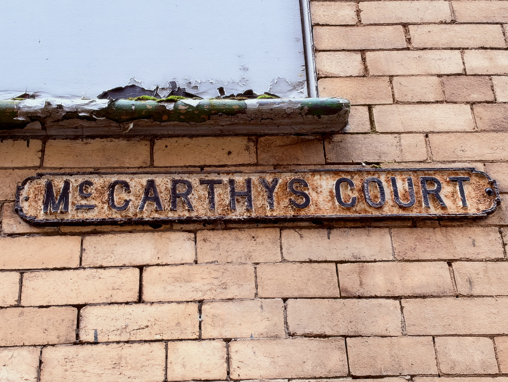
Yet despite decades of directory listings and insurance maps using Macarthy’s, the older, authentic spelling proved remarkably resilient. The painted cast-iron street nameplate that survives affixed to the wall of the lane today still proudly reads McCarthy’s Court, preserving the exact surname penned by Callaghan and Ann in their advertisements and legal documents seventy years earlier.
The Sanitary Reality: The 1850 Clark Report
By the middle of the century, the rapid growth of Newport had placed enormous strain on the town’s infrastructure. In 1850, Superintending Inspector George Thomas Clark General Board of Health Civil engineer and sanitary inspector under the 1848 Public Health Act whose 1850 Newport survey exposed the contrast between Commercial Street’s shopfronts and its enclosed rear courts. carried out a detailed sanitary survey on behalf of the General Board of Health, published as the Report to the General Board of Health on the Sanitary Condition of the Town of Newport21.
Clark’s survey documented the intense physical contrast that defined Commercial Street. While the main street presented an unbroken facade of prosperous, respectable commercial shops, the narrow courts hidden behind them told a very different story. Clark noted that these deep rear yards contained a dense mixture of properties, ranging from substantial rear houses, workshops, and bakeries to tightly packed cottage tenements sharing common privies and surface gutters.
McCarthy's Court was singled out as one of these enclosed, unventilated alleys. With no through-draught and relying on a single narrow passage between the Commercial Street shopfronts for access, the court was vulnerable to the cholera epidemics that swept through the port in 1849. Clark's findings prompted the newly formed Newport Local Board of Health to enforce stricter drainage, paving, and water supply regulations, gradually modernizing the sanitary conditions of the court's residents.
Alfred Bland and the Secret Villa at the Head of the Court (1868)
Even as the lower section of the court housed artisans and tradesmen, the upper grounds preserved their exclusive, residential character. In the 1860s, confectioner Alfred Bland operated a highly successful pastrycook and catering business at No. 33 Commercial Street, directly opposite the entrance to the court.
August 1868 Police Court Report (Bland v. P.C. Weir)
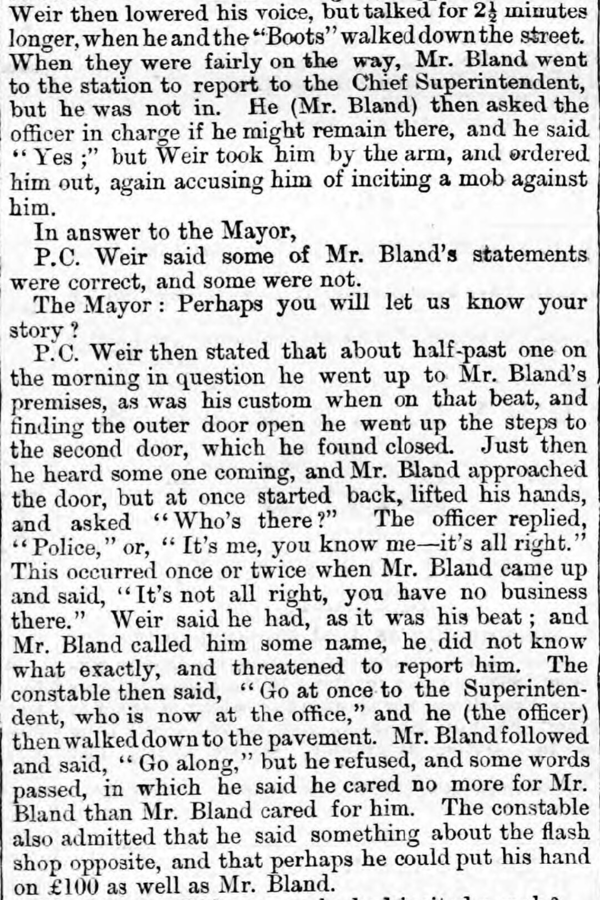
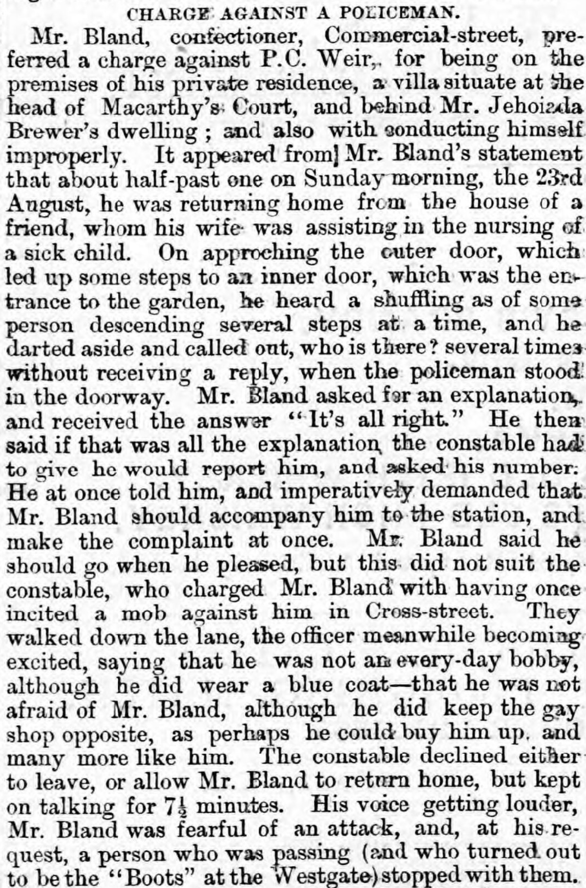
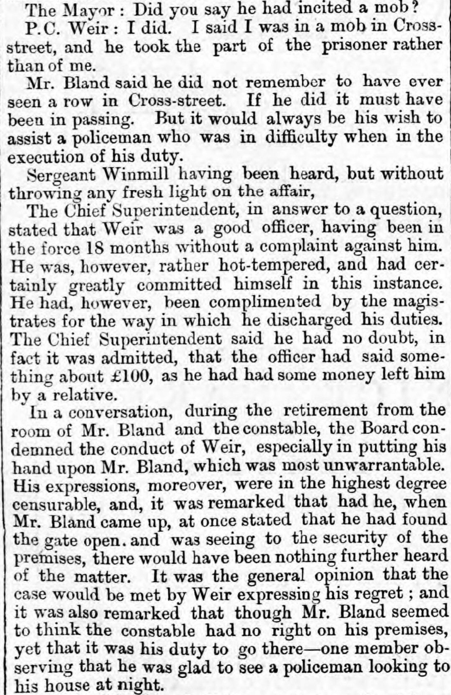
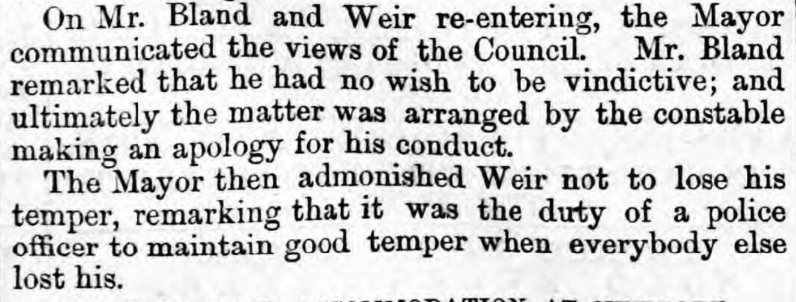
In August 1868, a colourful police court dispute brought before the Newport magistrates provided a remarkable glimpse into the top of the court22. Alfred Bland summoned Police Constable Weir for trespassing upon his private property and conducting himself improperly.
The court proceedings revealed that Bland did not live above his shop on Commercial Street, but resided in a secluded, high-status residence described by the court reporter as a “villa situate at the head of Macarthy's Court, and behind Mr. Jehoiada Brewer's dwelling.”
The testimony painted a vivid picture of the court's topography. Bland described walking home late at night down the narrow lane from Commercial Street, passing the lower cottages, and approaching an outer wooden door. Passing through, he climbed a private flight of stone steps leading up to an elevated inner garden entrance. When Bland challenged the constable for lurking in the darkness on his private grounds, Weir sneered that he was not afraid of Bland, “although he did keep the gay shop opposite.”
This elevated garden villa was none other than the historic Woodbine Cottage, which had housed Vicar Isaacson in the 1830s and was described in the 1856 Llanarth Estate letting as a seven-bedroom gentleman's residence with dining and drawing rooms, cellarage, and extensive terraced gardens. Bland’s presence confirmed that McCarthy’s Court remained a dual environment: an artisan court below, anchored by an elite gentleman’s villa on the rising ground above.
1888 Goad Fire Insurance Plan (Sheet 4)
Drag to pan or use zoom controls to inspect the court, Bland’s bakery, and Woodbine Cottage.
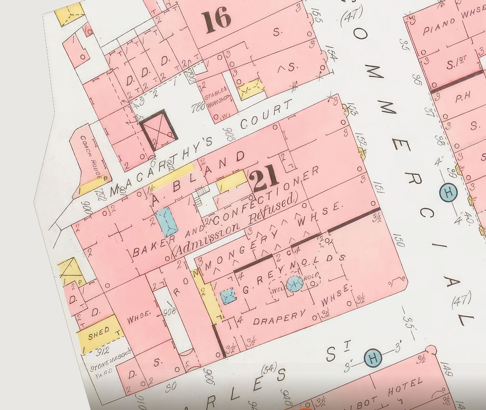
By the late 1880s, the commercial footprint of the block expanded once more. Sheet 4 of the 1888 Goad Fire Insurance Plan23 shows that Alfred Bland had established a large bakery behind No. 152, marked on the plan as “Admission Refused” to protect his trade secrets. The head of the court still featured Woodbine Cottage, occupied by Charles Read, alongside stables, stores, and three surviving cottage tenements.
Conclusion
Today, the entrance to McCarthy’s Court between Nos. 153 and 154 offers few clues to its long history. Demolitions in the mid-twentieth century for the expansion of Reynolds' department store cleared away the cottages and garden walls, truncating the lane into the quiet, cobbled dead-end that remains today.
McCarthy’s Court Today: The Surviving Lane
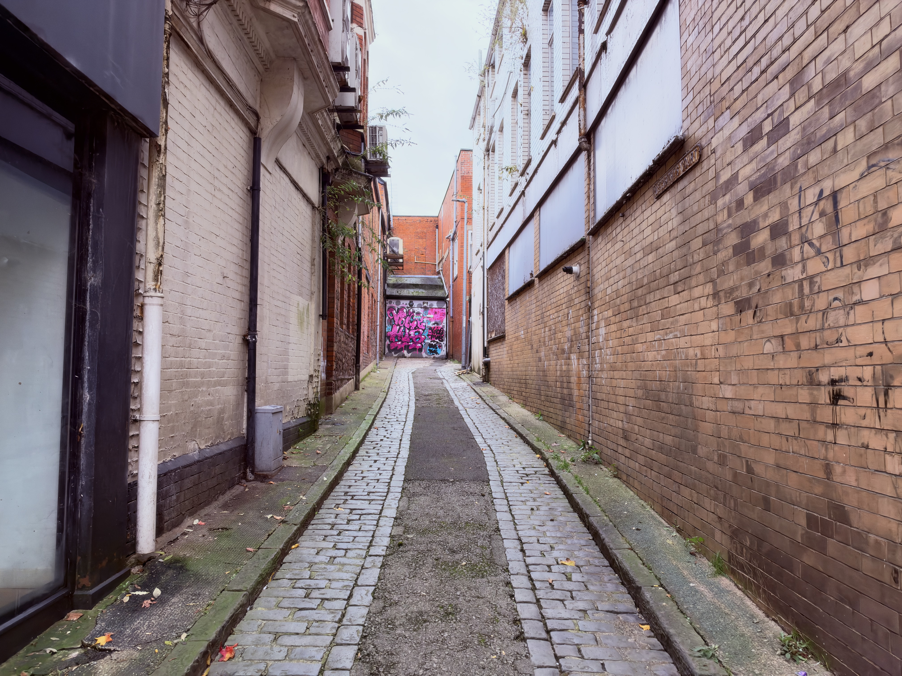
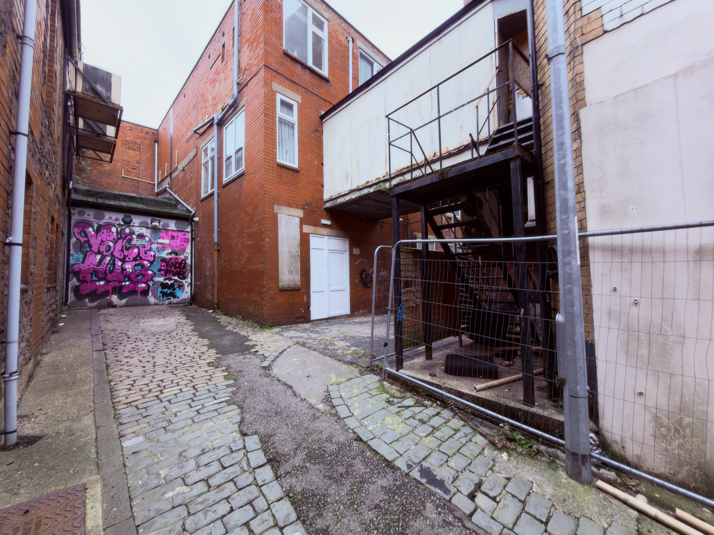
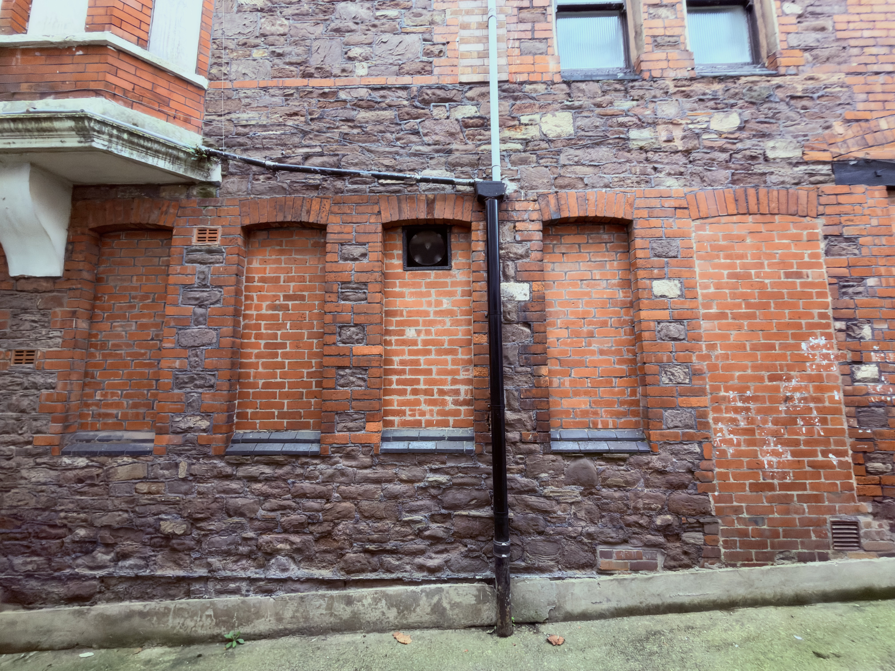
Yet when pieced together through sixty years of maps, deeds, census returns, and newspaper notices, the court emerges as one of the most remarkable micro-histories in Newport. It began as an open orchard in 1750, crossed by the rustic line of Corn Street and Deal Yard, before being caught up in the ambitious town improvements of 1810. Here, Callaghan McCarthy and Richard Davis risked £4,000 to plant a premier classical and commercial academy on the edge of the expanding town, complete with silver spoons, mandatory French conversation, and high academic standards.
As the town grew, the academy's footprint adapted to meet the demands of an industrial community. The Commercial Street frontage was reconstructed into smart retail shops for Herbert Williams and Thomas Waters, while Callaghan's thirty-to-forty-foot schoolroom and the rear domestic buildings evolved into the artisan homes of McCarthy’s Court. And perched on the hillside above, Woodbine Cottage stood witness to it all, housing vicars, schoolmasters, Ann McCarthy in her widowhood, and confectioner Alfred Bland.
McCarthy’s Court is not an accidental name, nor is it a forgotten relic of an anonymous landlord. It is the living, physical imprint of Callaghan and Ann McCarthy, whose grand Georgian academy helped shape the educational and architectural landscape of Commercial Street over two centuries ago.